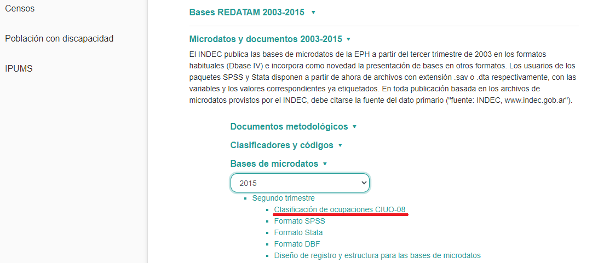

4.3 Explorando las variables socio-ocupacionales en la EPH
Paquetes que utilizaremos en esta sección:
En este apartado aplicaremos lo aprendido en punto anterior y exploraremos las distintas variables revisadas a partir de la EPH. Lo que nos interesa es identificarlas, saber qué nombre tienen y como se presentan sus categorías. Al mismo tiempo, revisaremos algunas de las cuestiones aprendidas en el Capítulo 3. Aprovecharemos a utilizar la base del segundo trimestre de la EPH de 2015, ya que en la misma, excepcionalmente, la ocupación fue codificada tanto a partir del CNO-01 como de la CIUO-08. De esta forma, por un lado descargaremos a través del paquete eph y añadiremos la variable de ocupación descargando la información adicional desde la página de INDEC.
En primer lugar descargamos la base:
Como la codificación de la variable ocupación a partir de la CIUO se encuentra en un archivo aparte, debemos acceder al sitio de INDEC para descargarlo.
Figure 4.3: Ejemplo clasificación de Actividades Profesionales, Científicas y Técnicas - CAES 1.0 (INDEC, 2011)
Luego de descargado el archivo, descomprimiremos el .rar y utilizaremos el archivo eph_ciuo_215.dbf. A continuación abriremos dicho archivo y “pegaremos” la variable PP04D_CIUO en la base eph_ind_215. Utilizaremos las variables CODUSU (identificador de vivienda), NRO_HOGAR (identificador del hogar) y COMPONENTE (identificador de miembro del hogar) como ID para emparejar ambas bases.
Ahora podemos etiquetar la base utilizando el comando organize_labels del paquete eph:
¡Listo! La base está preparada para ser explorada.
4.3.1 Condición de actividad
En la EPH la variable que mide la condición de actividad puede ser encontrada bajo el nombre “ESTADO”. Exploraremos las distintas categorías y frecuencias de casos que presenta para dicho trimestre.
##
## Entrevista individual no realizada (no respuesta al cuestionario individual)
## 63
## Ocupado
## 24398
## Desocupado
## 1450
## Inactivo
## 25138
## Menor de 10 anios.
## 8979Como puede observarse las categorías son entrevista individual no realizada, ocupado, desocupado, inactivo y menor de 10 años. En el caso de que pretendamos seleccionar únicamente a la población económicamente activa, deberemos filtrar las categorías 1 (ocupado) y 2 (desocupado). En este caso nos quedaríamos con 25848 registros.
## [1] 258484.3.2 Ocupación
Como presentaremos en la próxima unidad, la ocupación es la variable central en la construcción de esquemas de estratificación y clases sociales. En el caso de la EPH, los censos (posteriores a 1991) y las diversas encuestas que produce el INDEC, en las que se releva información ocupacional, suelen codificar dicha variable a través del CNO.
La EPH recaba la ocupación tanto para la población ocupada como desocupada, relevando para este último grupo el dato de la última ocupación realizada, en el caso que hubiera existido. Mientras que el primer dato se guarda en la variable PP04D_COD, la última ocupación de los desocupados puede encontrarse en la variable PP11D_COD. Con el comando table podemos visualizar todos los códigos existentes en la base y su frecuencia absoluta.
##
## 00001 01001 02001 03001 04001 05001 05002 06001 06002 07001 10112 10113
## 35630 44 2 11 66 11 102 654 266 1 6 26 13
## 10122 10131 10132 10133 10201 10202 10203 10311 10312 10313 10314 10323 10331
## 1 2 12 8 12 53 60 11 136 118 31 2 29
## 10332 10333 11113 11131 11132 11202 11203 11311 11312 11313 11323 11331 11332
## 33 2127 1 108 2 2 3 10 4 6 1 112 4
## 11333 20111 20112 20113 20131 20132 20133 20202 20203 20311 20312 20313 20314
## 52 1 1 9 57 2 7 10 25 8 7 203 6
## 20323 20331 20332 20333 30111 30112 30113 30131 30132 30133 30202 30203 30311
## 1 94 67 354 2 74 930 3 1 9 1 71 8
## 30312 30313 30314 30323 30331 30332 30333 31113 31312 31313 31314 32111 32113
## 217 310 1018 1 4 2 23 58 2 148 3 1 1
## 32123 32131 32133 32201 32202 32311 32312 32313 32314 32323 32333 33113 33133
## 1 2 1 1 5 1 2 5 152 2 10 217 1
## 33312 33313 33314 33333 34113 34123 34202 34203 34312 34313 34314 34323 34324
## 2 8 20 3 3 241 6 9 5 15 30 939 4
## 34331 34332 34333 35113 35123 35131 35201 35202 35203 35313 35314 35323 35333
## 1 2 1 4 20 2 2 1 6 11 28 176 7
## 36113 36203 36313 36314 36323 36333 40111 40112 40113 40131 40132 40201 40202
## 13 16 57 104 59 70 77 57 2 5 2 4 17
## 40203 40311 40312 40313 40314 40322 40323 40331 40332 40333 41111 41112 41113
## 1 251 400 12 19 27 9 23 12 1 2 112 1
## 41201 41202 41203 41311 41312 41313 41314 41323 41331 41332 41333 42131 42201
## 5 10 14 115 1335 98 1 2 12 1 2 1 1
## 42202 42203 42311 42313 42331 42332 42333 43111 43112 43131 43311 43331 43332
## 1 4 4 7 39 5 6 1 2 22 1 40 4
## 44111 44112 44113 44131 44132 44203 44312 44313 44331 45111 45112 45122 45123
## 1 3 2 2 1 3 41 10 2 1 3 3 1
## 45131 45132 45203 45311 45312 45322 45323 45331 45332 45662 46112 46202 46203
## 5 3 1 11 34 8 2 7 30 1 3 3 1
## 46311 46312 46313 46314 46331 46332 46333 47113 47203 47312 47313 47314 47323
## 18 52 17 2 3 1 2 5 7 1 255 71 6
## 48203 48311 48312 48313 48323 49202 49203 49311 49312 49313 49314 49323 49331
## 5 27 65 309 14 1 1 3 14 53 4 5 1
## 50111 50112 50113 50122 50131 50311 50312 50313 50322 51112 51202 51203 51312
## 22 1 2 1 2 25 2 2 1 30 2 1 77
## 51314 51331 52112 52113 52123 52203 52312 52313 52314 52323 52332 52333 53112
## 3 1 3 2 4 3 13 20 2 5 4 3 2
## 53113 53203 53312 53313 53314 53323 54112 54133 54311 54312 54313 54323 54332
## 160 31 9 262 286 3 4 1 1 10 14 1 2
## 54333 55203 55312 55314 56113 56123 56203 56313 56314 56323 57112 57113 57312
## 12 3 1 1354 22 1 7 67 927 21 9 130 3
## 57313 57314 58112 58113 58132 58203 58312 58313 58314 58323 58332 59313 60111
## 30 437 11 128 1 1 8 108 13 2 2 1 2
## 60113 60123 60131 60203 60311 60312 60313 60314 60323 60331 60332 60333 61113
## 1 4 6 2 1 1 50 3 11 5 1 1 4
## 61123 61203 61311 61313 61314 61323 61331 62313 62314 62323 63113 63313 63331
## 2 1 1 10 2 1 1 5 1 4 1 2 2
## 64113 64202 64313 64314 64323 64331 70131 70202 70203 70311 70312 70313 70322
## 1 1 8 2 2 1 2 3 28 1 3 33 2
## 70323 70331 70332 70333 71113 71201 71202 71203 71311 71312 71313 71323 71331
## 27 8 2 1 1 2 1 10 1 3 9 12 6
## 71332 71333 72112 72113 72131 72132 72201 72202 72203 72311 72312 72313 72314
## 1 1 29 873 50 1 2 3 58 2 60 1068 576
## 72323 72331 72332 72333 73113 74314 80111 80112 80113 80123 80131 80132 80202
## 41 56 17 2 1 1 1 74 144 222 5 1 4
## 80203 80311 80312 80313 80314 80322 80323 80331 80332 80333 81101 81121 81123
## 64 4 24 516 63 4 688 21 2 10 1 1 2
## 81131 81132 81201 81202 81323 81331 81332 81333 82111 82112 82113 82123 82131
## 23 3 19 1 1 68 9 1 1 46 219 49 1
## 82203 82312 82313 82314 82323 90112 90113 90203 90312 90313 90323 90331 90332
## 2 23 192 32 7 4 5 6 14 76 6 1 2
## 91311 92112 92113 92132 92202 92203 92312 92313 92331 92333 99999
## 1 44 3 2 1 1 90 48 2 1 53Por otro lado, el paquete eph mediante la función organize_CNO nos agrega 4 columnas a la base en donde se clasifica cada componente del CNO: carácter, jerarquía, tecnología y calificación ocupacional. A continuación revisamos dicho comando y solicitaremos las frecuencias, por ejemplo, de la calificación.
##
## No calificados Ns.Nc Operativos Profesionales Técnicos
## 5195 53 12879 2012 4259Por su parte en la variable PP04D_CIUO encontraremos a la ocupación codificada según el CIUO.
##
## 0110 0210 0310 1111 1112 1114 1120 1211 1212 1213 1219 1221 1222 1223 1311 1321
## 4 10 34 4 45 7 34 5 4 1 6 45 1 1 7 5
## 1322 1323 1324 1330 1341 1342 1343 1344 1345 1346 1349 1411 1412 1420 1431 1439
## 1 14 12 5 1 8 2 1 76 15 6 5 24 68 1 14
## 2111 2112 2113 2114 2120 2131 2132 2133 2141 2142 2143 2144 2145 2146 2149 2151
## 1 3 1 6 1 38 20 5 17 33 4 4 6 2 3 8
## 2152 2153 2161 2163 2164 2165 2166 2211 2212 2221 2240 2250 2261 2262 2263 2265
## 5 2 80 9 1 10 21 121 110 3 2 19 58 30 6 3
## 2266 2269 2310 2320 2330 2341 2342 2351 2352 2353 2354 2355 2356 2359 2411 2412
## 5 9 164 39 426 487 177 20 50 24 27 34 4 83 189 14
## 2413 2421 2422 2423 2424 2431 2432 2433 2434 2511 2512 2513 2514 2519 2521 2522
## 2 5 19 51 11 8 3 7 1 33 20 22 9 2 4 8
## 2523 2529 2611 2612 2619 2622 2631 2632 2633 2634 2635 2636 2641 2642 2643 2651
## 9 2 242 10 1 3 11 2 1 86 26 12 3 54 5 5
## 2652 2653 2654 2655 2656 2659 3111 3112 3113 3114 3115 3116 3117 3118 3119 3121
## 21 2 6 8 17 3 13 29 12 25 6 3 7 8 4 23
## 3122 3123 3131 3132 3133 3134 3135 3139 3141 3142 3143 3152 3153 3154 3155 3211
## 71 92 21 14 3 14 1 18 6 2 1 4 2 3 3 40
## 3212 3213 3214 3221 3222 3240 3251 3252 3253 3254 3255 3256 3257 3258 3259 3311
## 37 10 16 257 2 2 6 4 3 6 52 11 54 3 1 15
## 3312 3313 3314 3315 3321 3322 3323 3324 3331 3332 3333 3334 3339 3341 3342 3343
## 34 77 8 6 47 72 14 66 9 17 5 40 47 109 32 91
## 3344 3351 3352 3353 3354 3355 3359 3411 3412 3413 3421 3422 3423 3431 3432 3434
## 27 1 9 3 10 9 9 36 55 5 7 34 104 23 11 17
## 3435 3511 3512 3513 3514 3521 3522 4110 4120 4131 4132 4211 4212 4214 4221 4222
## 33 23 13 19 9 30 8 1830 226 5 24 21 59 29 27 81
## 4223 4224 4225 4226 4227 4229 4311 4312 4313 4321 4322 4323 4411 4412 4413 4415
## 38 25 29 64 9 4 289 9 18 119 17 35 26 70 1 3
## 4416 4419 5111 5112 5113 5120 5131 5132 5141 5142 5151 5152 5153 5161 5162 5163
## 6 20 1 3 15 301 146 36 155 42 7 4 52 2 5 6
## 5164 5165 5169 5211 5212 5221 5222 5223 5230 5241 5242 5243 5244 5245 5246 5249
## 23 1 6 69 33 1122 93 1229 230 2 7 241 41 47 36 8
## 5311 5312 5321 5322 5329 5411 5412 5413 5414 5419 6111 6112 6113 6114 6121 6122
## 265 106 62 147 57 10 413 42 344 42 9 6 10 11 27 3
## 6123 6130 6210 6222 6223 7111 7112 7113 7114 7115 7119 7121 7122 7123 7125 7126
## 2 5 6 5 6 5 1240 3 4 58 3 10 8 11 11 163
## 7127 7131 7132 7211 7212 7213 7214 7215 7221 7222 7223 7224 7231 7232 7233 7234
## 39 177 31 2 126 74 17 2 108 23 34 3 318 14 141 14
## 7311 7312 7313 7314 7315 7316 7317 7318 7319 7321 7322 7323 7411 7412 7413 7421
## 3 3 4 10 5 9 22 63 25 19 52 13 185 73 44 28
## 7422 7511 7512 7513 7514 7515 7516 7521 7522 7523 7531 7532 7533 7534 7535 7536
## 111 54 115 7 1 9 1 4 74 3 73 10 63 27 1 40
## 7542 7543 7544 7549 8111 8112 8113 8114 8121 8122 8131 8132 8141 8142 8143 8151
## 2 34 9 9 3 3 37 12 44 14 17 2 28 35 13 21
## 8152 8153 8154 8155 8156 8157 8159 8160 8172 8181 8182 8183 8189 8211 8212 8219
## 12 73 5 2 18 23 24 102 30 19 2 53 5 28 88 18
## 8311 8312 8321 8322 8331 8332 8341 8342 8343 8344 8350 9111 9112 9121 9122 9123
## 10 9 49 758 179 242 18 25 24 58 6 1361 763 11 75 1
## 9129 9211 9212 9213 9214 9215 9311 9312 9313 9321 9329 9331 9333 9334 9411 9412
## 2 28 14 1 190 3 6 13 561 61 47 5 158 146 36 138
## 9510 9520 9611 9612 9613 9621 9622 9623 9624 9629 9999
## 8 113 45 41 108 32 123 7 1 21 41A través del paquete modest y el comando mfv (most frequent value) calcularemos la moda de dichas variables, es decir, la ocupación más repetida en el relevamiento.
## [1] 4110
## 411 Levels: 0110 0210 0310 1111 1112 1114 1120 1211 1212 1213 1219 1221 ... 9999El código 4110 designa a los oficinistas generales
4.3.3 Rama de actividad
Al igual que para el caso de la ocupación, la rama de actividad es computada tanto para la población ocupada como la desocupada. En los relevamientos previos a 2011 y posteriores a 2016, en el primer caso acudimos a la variable PP04B_COD mientras que en el segundo a la PP11B_COD. Para los relevamiento entre 2011 y 2015, dichas variables fueron nombradas sin el sufijo *_COD* y con el sufijo *_CAES*.
Echamos un vistazo a la distribución de la población ocupada según la rama de actividad.
##
## 0101 0102 0103 0104 0200 0300 0600 0700 0800 0900 1001 1002
## 35630 101 43 35 1 6 15 48 4 26 100 116 43
## 1003 1009 1100 1200 1300 1400 1501 1502 1600 1700 1800 19 1902
## 37 383 53 5 120 156 13 57 41 31 67 3 8
## 20 2001 2002 2009 2100 2201 2202 2301 2309 2400 2500 2601 2602
## 24 6 30 5 101 33 62 14 63 26 406 18 7
## 2603 2604 2701 2709 2800 2900 3001 3003 3009 3100 3200 3300 3501
## 24 26 34 32 94 68 8 2 22 179 110 104 101
## 3502 3600 3800 3900 4000 4501 4502 4503 4504 48 4801 4802 4803
## 19 53 113 3 2575 100 398 74 48 126 21 35 777
## 4804 4805 4806 4807 4808 4809 4810 4811 49 4901 4902 4903 4904
## 427 168 80 651 827 41 416 28 15 36 1 582 302
## 4909 5000 5100 5201 5202 5300 5500 5601 5602 5800 5900 6000 6100
## 36 14 15 34 168 114 102 669 42 37 23 54 158
## 6200 6300 6400 6500 6600 6800 6900 7000 7100 7200 7301 7302 7400
## 95 7 219 179 12 55 371 60 136 36 40 11 91
## 7500 7701 7702 7800 7900 8000 8101 8102 8200 8401 8402 8403 8501
## 29 16 9 12 44 220 143 131 115 2094 990 76 1944
## 8509 8600 8700 8800 9000 9100 9200 9301 9302 9401 9402 9409 9501
## 229 1243 65 24 29 26 105 169 61 26 34 321 49
## 9502 9503 9601 9602 9603 9609 9700 Z
## 9 168 18 214 25 62 1780 113Del mismo modo que con la ocupación, el paquete eph mediante la función organize_CAES nos agrega 8 columnas a la base en donde se clasifican distintas cuestiones: versión de la CAES, código de sección y división, etiqueta de sección y división y clasificación de ramas de actividad agregadas. A continuación revisamos dicho comando y solicitaremos las frecuencias de las ramas agregadas.
##
## Actividades primarias
## 379
## Industria manufacturera
## 2631
## Construccion
## 2575
## Comercio
## 4217
## Hoteles y restaurantes
## 813
## Transporte, almacenamiento y comunicaciones
## 1691
## Servicios financieros, de alquiler y empresariales
## 1929
## Administracion publica, defensa y seguridad social
## 3084
## Ensenanza
## 2173
## Servicios sociales y de salud
## 1332
## Servicio domestico
## 1780
## Otros servicios comunitarios, sociales y personales
## 1316
## Otras ramas
## 169
## Actividades no bien especificadas
## 1204.3.4 Categoría de ocupación
La categoría de ocupación es una variable que también es de vital importancia en la construcción de clasificaciones. La misma puede encontrarse bajo el nombre de CAT_OCUP. A continuación exploramos sus categorías:
##
## 0 Patron
## 34530 969
## Cuenta propia Obrero o empleado
## 4772 19597
## Trabajador familiar sin remuneracion
## 1604.3.5 Sector de actividad
En la EPH el sector de actividad puede encontrarse en la variable PP04A.
##
## 0 ...estatal ...privada ...de otro tipo Ns./Nr..
## 35630 5517 18492 373 164.3.6 Tamaño del establecimiento
La medición del tamaño del establecimiento se encuentra distribuida en dos variables: PP04C y PP04C99. La primera permite captar en forma detallada el tamaño del establecimiento donde trabaja la persona en diferentes rangos, mientras que la segunda permite recuperar, mediante una clasificación más acotada, aquel dato que en la primera variable figuraba como “Ns/Nc”. A continuación exploramos ambas variables en forma cruzada.
##
## 0 hasta 5 de 6 a 40 mas de 40 Ns./Nr..
## 0 37370 0 0 0 0
## 1 persona 3565 0 0 0 0
## 2 personas 2123 0 0 0 0
## 3 personas 1241 0 0 0 0
## 4 personas 816 0 0 0 0
## 5 personas 752 0 0 0 0
## 6 a 10 personas 1876 0 0 0 0
## 11 a 25 personas 1783 0 0 0 0
## 26 a 40 personas 1567 0 0 0 0
## de 41 a 100 personas 2035 0 0 0 0
## de 101 a 200 personas 1386 0 0 0 0
## de 201 a 500 personas 1204 0 0 0 0
## mas de 500 personas 1304 0 0 0 0
## Ns./Nr. 0 125 610 919 1352Al igual que en el caso de la ocupación y la rama de actividad, para aquellas personas desocupadas que han trabajado alguna vez en el pasado, el tamaño del establecimiento puede ser identificado en las variables PP11C y PP11C99.
4.3.7 Supervisión
Si bien la supervisión no es una variable medida directamente en la EPH, podemos aproximarnos a dicha noción a través del CNO. En su tercer dígito mide la jerarquía ocupacional. Sin embargo, para extraer dicha información es necesario “partir” el código ocupacional, reteniendo el tercer dígito. A través de R, realizaremos la operación utilizando la función str_sub del paquete stringr, indicando que dígitos queremos retener. En este caso debemos señalar que queremos retener únicamente el tercer dígito (que empiece en el 3 y termine en el 3) y se lo asignaremos a una nueva variable llamada “cno_jerarquia”.
## [1] 619Conociendo que el código 2 es el que hace referencia a la jefatura, si filtramos los resultados podemos decir que existen 619 casos que supervisan las tareas de otras personas.